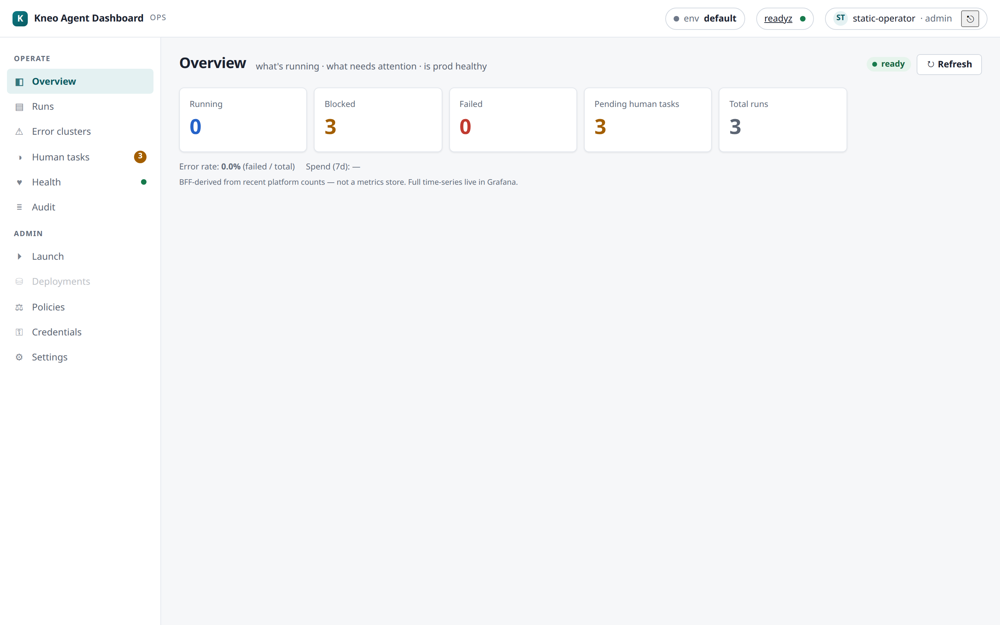

Cost & spend¶
"Roughly what is this environment costing?" The Dashboard derives an approximate, blended per-environment spend figure from run token usage and a price book you set. It is a cost estimate for orientation, not a billing source — the platform's usage is model-blind, so the number is intentionally a blended approximation.

What it's for¶
kneo-serv records per-run token usage (input / output / total) but not cost —
it doesn't know your model prices. The Dashboard closes that gap locally: you configure a
single blended rate (USD per 1000 total tokens) and it multiplies that by the tokens of
the runs in a trailing window. This gives a quick "is spend where I expect?" signal on the
Overview and a dedicated rollup at GET /api/spend, without standing up a metrics
pipeline.
It is deliberately modest: one blended rate, not per-model pricing (per-model needs an upstream usage-by-model surface — kneo-serv#443).
Setting the price book¶
Settings › Pricing (admin in the built-in default map — the settings.write capability):
blended_per_1k— your blended cost per 1000 total tokens, in USD (currencydefaults toUSD). Set it to a rate that averages your input/output mix and models.- Leave it unset /
nullto disable pricing — runs then show tokens only and every spend figure isnull(priced=false). This is the default (is_default=true). - Writes are
settings.write-gated and get a best-effort audit append (like the other Settings writes — see the audit contract).
The spend rollup (GET /api/spend)¶
GET /api/spend?window=<24h|7d|30d> (default 7d; an unknown window → 400) returns a
per-environment SpendView:
| Field | Meaning |
|---|---|
window |
the trailing window requested (24h / 7d / 30d) |
total_cost_usd |
blended cost over the window — null when no price book is set (priced=false) |
currency |
from the price book (default USD) |
counted |
runs that contributed usage to the figure |
scanned |
runs actually examined (the scan is bounded — see below) |
total |
the platform's total run count for the window (may exceed scanned) |
truncated |
true when the window has more runs than the scan budget — the figure is then a lower bound |
priced |
true only when a price book is configured |
approximate |
true whenever priced — the blended rate is never exact |
Scope + bound. Spend is for the active environment (the BFF is env-bound per request)
and the scan is bounded to 1000 runs (5 pages × 200), newest-first over the window
(created_at desc, created_after the window boundary). If the window holds more than that,
truncated is true and total_cost_usd is a lower bound — the Overview Spend line flags
it (window truncated (N scanned)), never a silent whole-history total.
Reading the numbers — the four honesty flags¶
approximate— alwaystruewhen priced. It's a blended rate over a model-blind usage figure; treat it as an estimate, not an invoice.- model-blind — the platform reports total tokens, not per-model breakdowns, so a single blended rate is the most precision available today.
priced=false— no price book set; the Dashboard shows tokens only andtotal_cost_usdisnull. Set Pricing to turn on the estimate.truncated— the window exceeded the 1000-run scan budget; the shown cost/count is a lower bound. Narrow the window (24h) for a complete figure on a busy environment.
On the Overview¶
The Overview renders a per-environment Spend (7d) line: the 7-day blended figure,
— until a price book is set, and a window-truncation flag when the budget is exceeded. It
sits alongside the error-rate line as a lightweight health/cost glance — real time-series live
in Grafana (the Overview deep-link, ADR-005), not here.
Related¶
- Connecting — environments; spend is per active env.
- Runs & debugging — the Overview tiles + Spend/error-rate lines.
- View-models —
SpendView/PriceBookViewshapes.